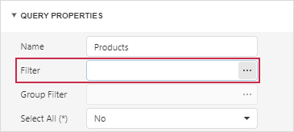
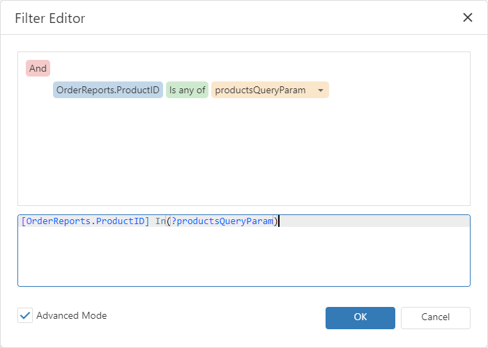

Cascading Parameters
Create cascading parameters to filter a list of predefined parameter values based on values of another parameter. The following image illustrates cascading parameters where Products parameter values are filtered by the selected Category:

In case of two parameters, the first parameter is used to filter the data source for the second parameter with dynamic list settings.
Create Cascading Parameters
The dashboard in this example is connected to a Northwind database (an SQL Database) and contains three queries: Categories, Products, and OrderReports. The Grid item visualizes data from the OrderReports query.
In this tutorial, you will create two dashboard parameters:
- The categoryDashParam parameter filters the Products query. The Products query is a data source for the productsDashParam parameter.
- The productsDashParam parameter filters the OrderReports query.
The steps below create cascading parameters in the Web Dashboard:
Create a dashboard parameter called categoryDashParam with dynamic list settings. Use the Categories query as a data member and the CategoryID field as a value member.
The parameter settings may look as follows:

Filter the Products query.
To do this, click the Edit button next to the query on the Data Sources page of the dashboard menu.

Click Run Query Builder in the opened window.
In the invoked Query Builder, click the ellipsis button next to the Filter field in the Query Properties section:

In the Filter Editor, specify the filter criteria. From the drop-down list select Parameter and create a new query parameter called categoryQueryParam:

The resulting filter looks as follows:
[Products.CategoryID] = ?categoryQueryParamBind the categoryQueryParam query parameter to the categoryDashParam dashboard parameter.
To do this, in the Parameters section of the Query Builder change the parameter’s type to Expression. Click the Value property’s ellipsis button to specify the dashboard parameter.
The query parameter settings look as follows:

Create a dashboard parameter called productsDashParam with dynamic list settings. Use the Products query as a data member and the ProductID field as a value member.
The parameter settings may look as follows:

Filter the OrderReports query.
To do this, click the Edit button next to the query on the Data Sources page of the dashboard menu, then click Run Query Builder. In the invoked Query Builder, click the ellipsis button next to the Filter field in the Query Properties section.
In the Filter Editor, specify the filter criteria. From the drop-down list select Parameter and create a new query parameter called productsQueryParam:

The resulting filter looks as follows:
[OrderReports.ProductID] In(?productsQueryParam)Bind the productsQueryParam query parameter to the productsDashParam dashboard parameter.
To do this, in the Parameters section in the Query Builder change the parameter’s type to Expression. Click the Value property’s ellipsis button to specify the dashboard parameter.
The query parameter settings look as follows:

Create a Grid item to visualize data from the filtered OrderReports query.
Tip
When using a multi-value parameter to filter a query, create the condition with the Is any of or Is none of operator.